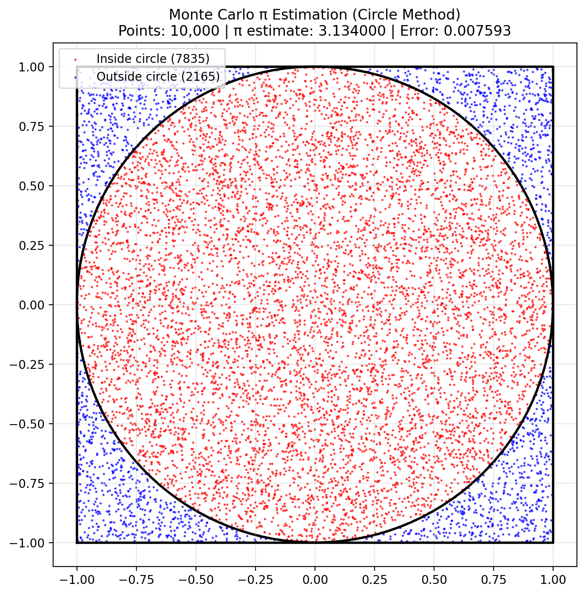
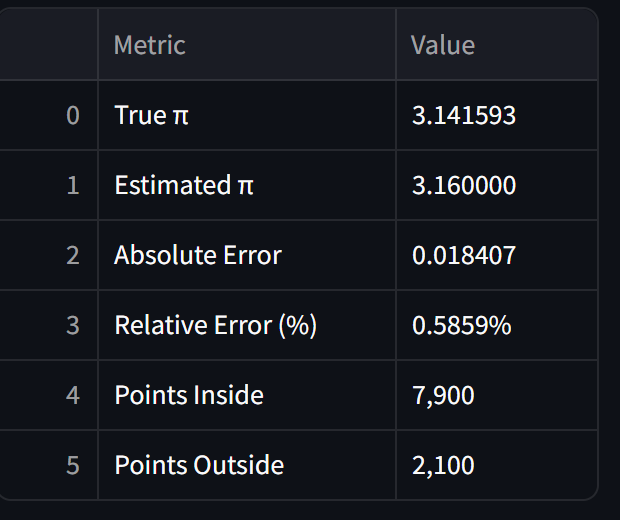
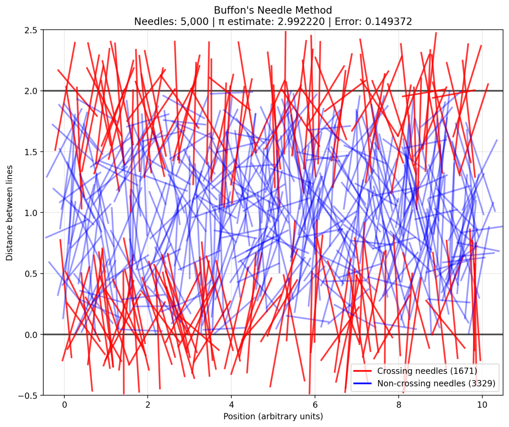
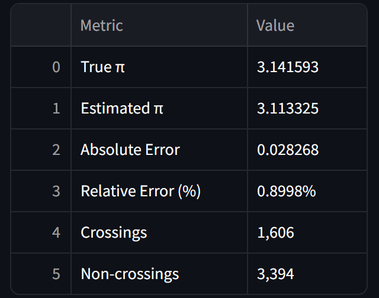
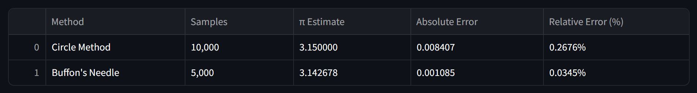
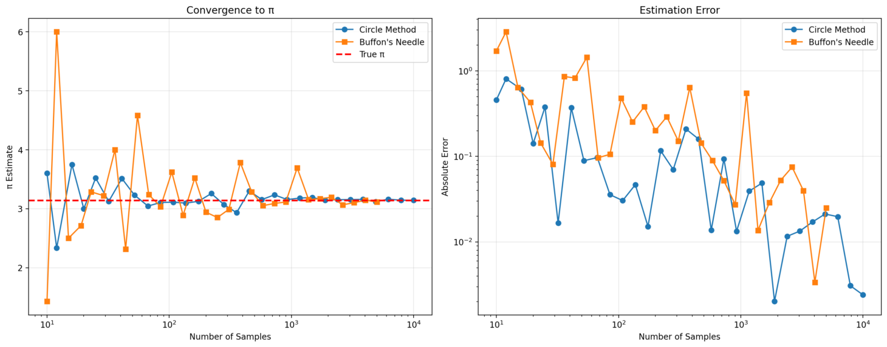

Problem 2
Estimating Pi using Monte Carlo Methods
Circle Method Visualization:

Understanding the Methods
Circle Method Theory:
Geometric Principle: A unit circle inscribed in a 2×2 square has:
Circle area = π × 1² = π
Square area = 2 × 2 = 4
Ratio = π/4
Monte Carlo Estimation: Generate random points in the square. Count points inside the circle (x² + y² ≤ 1) π ≈ 4 × (points inside / total points)
Results:

Buffon's Needle Visualization:

Understanding the Methods
Geometric Setup
- Parallel Lines: The plane has parallel lines separated by a distance of 2.0 units.
- Needles: Each needle has a length of 1.0 unit and is dropped randomly.
- Randomization: Each needle has a random position (center) and angle relative to the lines.
Crossing Probability
- A needle crosses a line if it spans across the line boundary.
- For a needle of length \( L \) and line separation \( d \), the theoretical probability of a needle crossing a line is: [ P = \frac{2L}{\pi d} ]
- In this setup: \( L = 1.0 \), \( d = 2.0 \), so: [ P = \frac{2 \times 1.0}{\pi \times 2.0} = \frac{1}{\pi} ]
π Estimation
- The value of π can be estimated using the formula: [ \pi \approx \frac{2 \times \text{needle length} \times \text{total drops}}{\text{line distance} \times \text{crossings}} ]
- For the current setup (\( L = 1.0 \), \( d = 2.0 \)): [ \pi \approx \frac{2 \times 1.0 \times n}{2.0 \times \text{crossings}} = \frac{n}{\text{crossings}} ]
- As the number of needle drops increases, the estimate converges to the true value of π.
Results:

Method Comparison:

Convergence Analysis:
